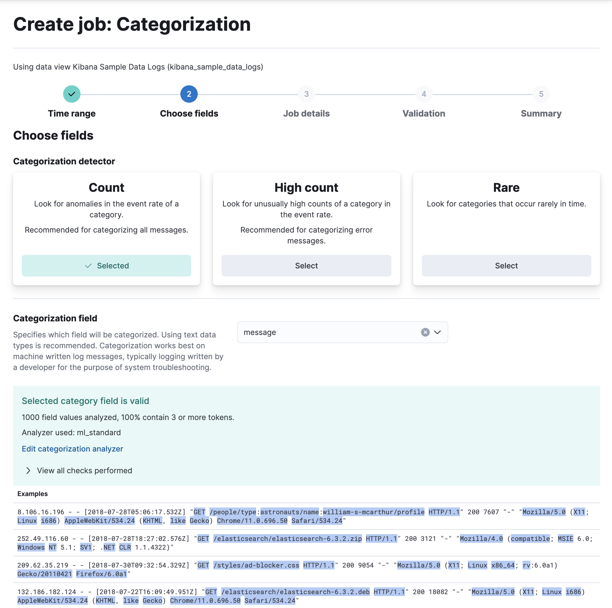

Detecting anomalous categories of data
editCategorization is a machine learning process that tokenizes a text field, clusters similar data together, and classifies it into categories. It works best on machine-written messages and application output that typically consist of repeated elements. Categorization jobs enable you to find anomalous behavior in your categorized data. Categorization is not natural language processing (NLP). When you create a categorization anomaly detection job, the machine learning model learns what volume and pattern is normal for each category over time. You can then detect anomalies and surface rare events or unusual types of messages by using count or rare functions. Categorization works well on finite set of possible messages, for example:
{"@timestamp":1549596476000,
"message":"org.jdbi.v2.exceptions.UnableToExecuteStatementException: com.mysql.jdbc.exceptions.MySQLTimeoutException: Statement cancelled due to timeout or client request [statement:\"SELECT id, customer_id, name, force_disabled, enabled FROM customers\"]",
"type":"logs"}
Recommendations
edit- Categorization is tuned to work best on data like log messages by taking token order into account, including stop words, and not considering synonyms in its analysis. Use machine-written messages for categorization analysis.
- Complete sentences in human communication or literary text (for example email, wiki pages, prose, or other human-generated content) can be extremely diverse in structure. Since categorization is tuned for machine data, it gives poor results for human-generated data. It would create so many categories that they couldn’t be handled effectively. Avoid using human-generated data for categorization analysis.
Creating categorization jobs
edit- In Kibana, navigate to Machine Learning > Anomaly Detection > Jobs.
- Click Create job, select the {data-view} you want to analyze.
- Select the Categorization wizard from the list.
-
Choose a categorization detector - it’s the
countfunction in this example - and the field you want to categorize - themessagefield in this example. - Click Next.
- Provide a job ID and click Next.
- If the validation is successful, click Next to review the summary of the job creation.
- Click Create job.
This example job generates categories from the contents of the message field and uses the count function to determine when certain categories are occurring at anomalous rates.
API example
Viewing the job results
editUse the Anomaly Explorer in Kibana to view the analysis results:
For this type of job, the results contain extra information for each anomaly: the name of the category (for example, mlcategory 2) and examples of the messages in that category.
You can use these details to investigate occurrences of unusually high message counts.
Advanced configuration options
editIf you use the advanced anomaly detection job wizard in Kibana or the create anomaly detection jobs API, there are additional configuration options.
For example, the optional categorization_examples_limit property specifies the maximum number of examples that are stored in memory and in the results data store for each category.
The default value is 4.
Note that this setting does not affect the categorization; it just affects the list of visible examples.
If you increase this value, more examples are available, but you must have more storage available.
If you set this value to 0, no examples are stored.
Another advanced option is the categorization_filters property, which can contain an array of regular expressions.
If a categorization field value matches the regular expression, the portion of the field that is matched is not taken into consideration when defining categories.
The categorization filters are applied in the order they are listed in the job configuration, which enables you to disregard multiple sections of the categorization field value.
In this example, you might create a filter like [ "\\[statement:.*\\]"] to remove the SQL statement from the categorization algorithm.
Per-partition categorization
editIf you enable per-partition categorization, categories are determined independently for each partition.
For example, if your data includes messages from multiple types of logs from different applications, you can use a field like the ECS event.dataset field as the partition_field_name and categorize the messages for each type of log separately.
If your job has multiple detectors, every detector that uses the mlcategory keyword must also define a partition_field_name.
You must use the same partition_field_name value in all of these detectors.
Otherwise, when you create or update a job and enable per-partition categorization, it fails.
When per-partition categorization is enabled, you can also take advantage of a stop_on_warn configuration option.
If the categorization status for a partition changes to warn, it doesn’t categorize well and can cause unnecessary resource usage.
When you set stop_on_warn to true, the job stops analyzing these problematic partitions.
You can thus avoid an ongoing performance cost for partitions that are unsuitable for categorization.
Customizing the categorization analyzer
editCategorization uses English dictionary words to identify log message categories. By default, it also uses English tokenization rules. For this reason, if you use the default categorization analyzer, only English language log messages are supported, as described in the Limitations.
If you use the categorization wizard in Kibana, you can see which categorization analyzer it uses and highlighted examples of the tokens that it identifies. You can also change the tokenization rules by customizing the way the categorization field values are interpreted:
The categorization analyzer can refer to a built-in Elasticsearch analyzer or a combination of zero or more character filters, a tokenizer, and zero or more token filters.
In this example, adding a pattern_replace character filter achieves the same behavior as the categorization_filters job configuration option described earlier.
For more details about these properties, refer to the categorization_analyzer API object.
If you use the default categorization analyzer in Kibana or omit the categorization_analyzer property from the API, the following default values are used:
POST _ml/anomaly_detectors/_validate
{
"analysis_config" : {
"categorization_analyzer" : {
"char_filter" : [
"first_line_with_letters"
],
"tokenizer" : "ml_standard",
"filter" : [
{ "type" : "stop", "stopwords": [
"Monday", "Tuesday", "Wednesday", "Thursday", "Friday", "Saturday", "Sunday",
"Mon", "Tue", "Wed", "Thu", "Fri", "Sat", "Sun",
"January", "February", "March", "April", "May", "June", "July", "August", "September", "October", "November", "December",
"Jan", "Feb", "Mar", "Apr", "May", "Jun", "Jul", "Aug", "Sep", "Oct", "Nov", "Dec",
"GMT", "UTC"
] }
]
},
"categorization_field_name": "message",
"detectors" :[{
"function":"count",
"by_field_name": "mlcategory"
}]
},
"data_description" : {
}
}
If you specify any part of the categorization_analyzer, however, any omitted sub-properties are not set to default values.
The ml_standard tokenizer and the day and month stopword filter are almost equivalent to the following analyzer, which is defined using only built-in Elasticsearch tokenizers and token filters:
PUT _ml/anomaly_detectors/it_ops_new_logs
{
"description" : "IT Ops Application Logs",
"analysis_config" : {
"categorization_field_name": "message",
"bucket_span":"30m",
"detectors" :[{
"function":"count",
"by_field_name": "mlcategory",
"detector_description": "Unusual message counts"
}],
"categorization_analyzer":{
"char_filter" : [
"first_line_with_letters"
],
"tokenizer": {
"type" : "simple_pattern_split",
"pattern" : "[^-0-9A-Za-z_./]+"
},
"filter": [
{ "type" : "pattern_replace", "pattern": "^[0-9].*" },
{ "type" : "pattern_replace", "pattern": "^[-0-9A-Fa-f.]+$" },
{ "type" : "pattern_replace", "pattern": "^[^0-9A-Za-z]+" },
{ "type" : "pattern_replace", "pattern": "[^0-9A-Za-z]+$" },
{ "type" : "stop", "stopwords": [
"",
"Monday", "Tuesday", "Wednesday", "Thursday", "Friday", "Saturday", "Sunday",
"Mon", "Tue", "Wed", "Thu", "Fri", "Sat", "Sun",
"January", "February", "March", "April", "May", "June", "July", "August", "September", "October", "November", "December",
"Jan", "Feb", "Mar", "Apr", "May", "Jun", "Jul", "Aug", "Sep", "Oct", "Nov", "Dec",
"GMT", "UTC"
] }
]
}
},
"analysis_limits":{
"categorization_examples_limit": 5
},
"data_description" : {
"time_field":"time",
"time_format": "epoch_ms"
}
}
|
Only consider the first line of the message with letters for categorization purposes. |
|
|
Tokens consist of hyphens, digits, letters, underscores, dots and slashes. |
|
|
By default, categorization ignores tokens that begin with a digit. |
|
|
By default, categorization ignores tokens that are hexadecimal numbers. |
|
|
Underscores, hyphens, and dots are removed from the beginning of tokens. |
|
|
Underscores, hyphens, and dots are also removed from the end of tokens. |
The key difference between the default categorization_analyzer and this example analyzer is that using the ml_standard tokenizer is several times faster.
The ml_standard tokenizer also tries to preserve URLs, Windows paths and email addresses as single tokens.
Another difference in behavior is that the custom analyzer does not include accented letters in tokens whereas the ml_standard tokenizer does.
This could be fixed by using more complex regular expressions.
If you are categorizing non-English messages in a language where words are separated by spaces, you might get better results if you change the day or month words in the stop token filter to the appropriate words in your language. If you are categorizing messages in a language where words are not separated by spaces, you must use a different tokenizer as well in order to get sensible categorization results.
It is important to be aware that analyzing for categorization of machine generated log messages is a little different from tokenizing for search. Features that work well for search, such as stemming, synonym substitution, and lowercasing are likely to make the results of categorization worse. However, to drill down from machine learning results to work correctly, the tokens the categorization analyzer produces must be similar to those produced by the search analyzer. If they are sufficiently similar, when you search for the tokens that the categorization analyzer produces then you find the original document that the categorization field value came from.